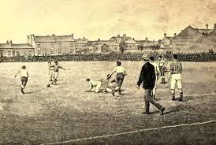

Počátky fotbalu
Fotbal má své kořeny v dávných hrách, které se hrály už před tisíci lety. V různých kulturách existovaly hry s míčem, které měly podobný cíl jako dnešní fotbal. Moderní pravidla se však začala formovat v 19. století v Anglii. V roce 1863 vznikla první fotbalová asociace, která stanovila jednotná pravidla. Tím začala éra moderního fotbalu, jak ho známe dnes.
Od té doby se fotbal šířil po celém světě a stal se kulturním fenoménem. Každá země si k němu našla svůj vztah a vychovala vlastní legendy. Historie fotbalu je plná emocí, rivalit i přátelství. V tomto období vznikla i řada klubů, které dnes patří mezi nejznámější na světě. Dnešní fotbal se stal nejen sportem, ale i obrovským společenským a ekonomickým fenoménem.
Pododkazy
Staré hry

Starověký fotbal se nazýval harpastum (v Řecku harpaston) a byl oblíbený zejména v Římě, kde sloužil jako trénink pro legionáře. Šlo o týmovou hru s míčem, která se hrála s malým, vycpaným míčem, ačkoli se pravidla lišila od moderní hry.
Anglický fotbal
.jpeg)
Moderní fotbal, jak ho známe dnes, se zrodil v Anglii v 60. letech 19. století. Anglie je považována za kolébku tohoto sportu, kde došlo k jeho standardizaci a formalizaci.
Rozvoj ve světě
Historie fotbalu sahá až k prapůvodním míčovým hrám starověkých kultur, ale jeho moderní podoba se zrodila v Anglii v polovině 19. století, sjednocením pravidel a založením prvních asociací.